Mi a mélyalapozás?
Ha a síkalapozás nem megfelelő, az építmény szerkezete és a mélyebben fekvő, kellő teherbírású altalaj közé egy teherközvetítő elemet építünk be. Ez a mélyalap – és a legfontosabb tulajdonsága, hogy nemcsak az alján, hanem az oldalán, a köpenyén is át tud adni terhet a talajnak.
Mikor kell mélyalap?
Az alapozási rendszereknek két nagy családja van: a síkalapok és a mélyalapok. A múlt század végéig a síkalapozás dominált, az utóbbi két-három évtizedben azonban egyre nagyobb szerepet kapnak a mélyalapozási rendszerek. Mélyalapot akkor választunk, ha a síkalap valamiért nem elég – vagy egyszerűen drágább lenne.
Egyre nagyobb terhelésű és süllyedésre érzékenyebb épületeket kell lealapozni – ezeknél sokszor már a vasbeton lemezalap sem elég, elsősorban a süllyedések korlátozása miatt. A jó altalajú területek elfogytak, ezért egyre gyakrabban kell feltöltött, mocsaras jellegű telken építeni. És a mélyalapozási technológiák annyit fejlődtek, hogy – a kivitelezési időt is beszámítva – összességében sokszor olcsóbbak, mint egy síkalap.
Óriások és az alapjuk
A felhőkarcolók és a tornyok a mélyalapozás leglátványosabb esetei. A nagy teher mellett gyakran a kedvezőtlen altalaj és a szigorú süllyedési kritérium is a mélybe kényszeríti az alapot.
Az alábbi ábrán minden építmény és az alapja ugyanabban a léptékben szerepel. Nézd meg, milyen mélyre kell nyúlnia az alapnak – és vedd észre, hogy ezt nem az épület magassága, hanem az altalaj dönti el.
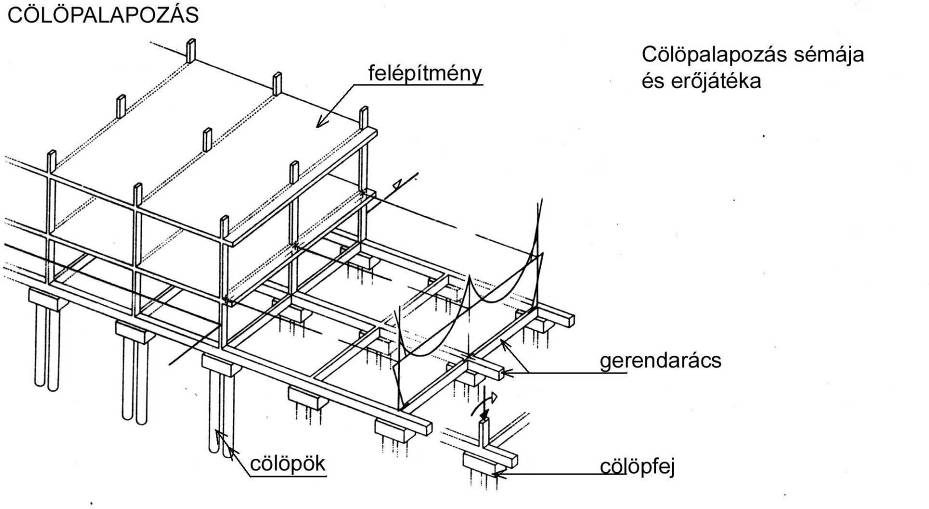


A Burdzs Kalifa (828 m) majdnem kétszer olyan magas, mint a Petronas-tornyok, mégis „csak” kb. 43 m hosszú cölöpökön áll. A Petronas alatt viszont 100 m‑nél is hosszabb réselt vasbeton elemek (barettek) kellettek, mert ott a teherbíró réteg nagyon mélyen fekszik. Az alap mélységét tehát elsősorban a talaj szabja meg.
Ha a víz kimossa az alapot
A folyómederben álló hídpillér körül a víz örvénylik: a pillér homlokánál lefelé forduló áramlás és a pillér tövénél kialakuló patkóörvény kiszedi a mederanyagot, a pillér körül kimélyülés (kimosás, kiüregelés) alakul ki. Árvízkor ez néhány óra alatt több métert is elérhet.
Ha a pillér síkalapon áll, és a kimélyülés eléri az alapsíkot, a pillér alámosódik – a hídleszakadások egyik leggyakoribb oka. Ezért a mederpilléreket a várható kimosási mélység alá nyúló mélyalapra (cölöpökre, kútra, szekrényre) helyezik.
A rövid 3D animáció a kimélyülés kialakulását mutatja – 40 perc alatt a pillér körül.
Talp és köpeny
A síkalap a terhet a talpán adja át: a talpfeszültség a felső, sokszor gyenge rétegeket terheli, ezek pedig összenyomódnak. A mélyalap a terhet a mélyebben fekvő, jobb teherbírású rétegbe viszi le, és közben a köpenyén is súrlódással, tapadással ad át terhet a talajnak.
A cölöpnél ezt a két részt külön néven is nevezzük: talp- vagy csúcsellenállás (a talpon, nyomással) és köpenymenti (palást-) ellenállás (a köpeny mentén, nyírással). Hogy melyik dominál, az a cölöp besorolását is eldönti – erről a következő fejezetben lesz szó.
A mélyalapozás fajtái
Cölöpalapozás
Karcsú, mélyre vezetett teherátadó elemek, a fejeiket tömb, lemez vagy gerendarács fogja össze. Ma messze ez a leggyakoribb mélyalap.
Résfalas alapozás
Folytonos, síkbeli szerkezet – fal a talajban. Elsősorban munkatérhatárolásra használjuk, ritkábban csak alapozásra; gyakran egyszerre mindkettő.
Kút- és szekrényalapozás
Nagy keresztmetszetű, saját súlyuknál fogva süllyesztett testek. A cölöpök és a korszerű munkatérhatárolások miatt ma egyre ritkábban készülnek.
A sík- és a mélyalapok határa nem éles. A markolt tömbalap megtámasztás nélkül, markolóval kiemelt és rögtön kibetonozott tömb; kötött talajban, talajvíz felett kb. 5–6 m‑ig készül, és kútalapnak is nevezik. A kombinált alapozásnál – például a merev betétes talajjavításnál (rigid inclusion) – a talajba merev, cölöpszerű elemeket (jellemzően vasalatlan beton- vagy habarcsoszlopokat) építenek, de ezeket nem kötik be mereven a szerkezetbe (pl. az alaplemezbe): a kettő közé egy teherelosztó szemcsés réteg kerül, amelyben boltozódás alakul ki, így a teher egy része a köztes talajra, más része a merev elemekre jut. Ez talajjavítás, nem cölöpalap.
A cölöpalap részei
Új építmény cölöpalapja két fő részből áll: a cölöpökből, és a fejeiket összefogó tömbből, lemezből és/vagy cölöprácsból (gerendarácsból). Az összefogó szerkezet osztja szét a felépítmény terhét a cölöpökre, és együttdolgozásra kényszeríti őket.
Mire jó még a cölöp?
Új építmény alapja
A leggyakoribb szerep: az új építmény alapozási szerkezete.
Utólagos megerősítés
Károsodott épületek alapjának megerősítése, vagy ha átalakítás, ráépítés miatt a meglévő alap már nem bírja a többletterhet.
Talajjavítás
A bevert, bevibrált cölöpök (pl. előregyártott vasbeton cölöpök, kavicscölöpök) a kiszorítással tömörítik a környező talajt.
Munkatérhatárolás
Cölöpökből ideiglenes vagy végleges földmegtámasztó szerkezet, cölöpfal is készülhet.
Lejtőstabilizálás
A csúszólapon átnyúló cölöpsor hosszú távon is megfogja a mozgásra hajlamos lejtőt.
Lehorgonyzás
Húzott cölöpként a felúszó mélygarázst, tartályt vagy a vezetéktartó oszlopot is lehorgonyozhatja.
Cölöpök rendszere
A cölöpöket sokféleképpen lehet csoportosítani: aszerint, hogyan adják át a terhet, milyen igénybevételt kapnak, miből és hogyan készülnek, és mekkora az átmérőjük. Ezek a szempontok nem zárják ki egymást – egy CFA-cölöp lehet egyszerre álló, nyomott, vasbeton, talajhelyettesítéses és „normál” átmérőjű.
Teherátadás szerint
A nyomott cölöpöket aszerint soroljuk osztályba, hogy a teljes teherbírásból mekkora részt vállal a csúcs-, és mekkorát a köpenymenti ellenállás:
- Álló cölöp – a teherbírás legalább 2/3-át a csúcsellenállás adja. A köpeny mentén gyengébb talajok (esetleg víz) vannak, a cölöp egy sokkal jobb teherbírású rétegbe „áll bele”.
- Lebegő cölöp – a teherbírás legalább 2/3-át a köpenymenti ellenállás adja. A csúcs környékén nincs jobb teherbírású réteg, a hosszabb cölöpök súrlódási ellenállása dominál.
- Vegyes (kombinált) cölöp – a csúcs és a köpeny hasonló arányban, 33–66 % között vesz részt a teherbírásban.
Az álló cölöp csak akkor működik, ha kellő mélységgel befogják a teherbíró rétegbe. A furat talpán ráadásul sose maradjon fellazult, leülepedett vagy beomlott talaj – az jelentősen csökkentheti a csúcsellenállást.
Igénybevétel szerint
A cölöpök leggyakrabban tengelyirányú nyomóerőt kapnak: a terhet a csúcson nyomással, a köpenyen nyírással veszik fel.
Ritkábban húzottak is lehetnek – ekkor a teherátadás csak a köpeny mentén történik, ellentétes irányban. Ez akkor fordul elő, ha egy cölöpcsoport olyan nagy külpontos terhet kap, hogy egyes cölöpei húzottá válnak, vagy ha a cölöpöt eleve lehorgonyzásra építik: felúszás ellen (tartályok, mélygarázsok), vezetéktartó oszlopoknál.
A tengelyirányú terhen kívül keresztirányú terhet is kaphatnak (földnyomás, fékezőerő, szélteher, földrengés), sőt előfordul, hogy egy cölöp csak vízszintes erőt kap. Ilyenkor a nyomófeszültség mellett hajlító- és nyírófeszültségek is kialakulnak.
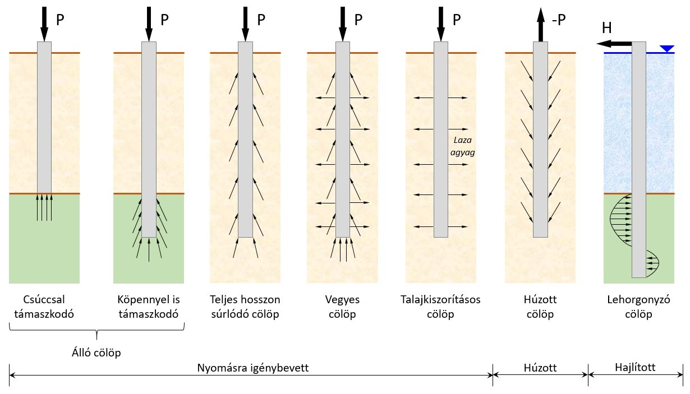
Anyaguk szerint
Vasbeton
A leggyakoribb. Készülhet helyben (monolit), vagy előregyártva, a helyszínre szállítva.
Fa
Impregnált keményfa. Régen sokat alkalmazták – még az ókorból is előkerültek facölöpös építmények –, ma már nagyon ritkán. Talajvízszint alatt nagyon tartós.
Acél, öntöttvas
Cső vagy hengerelt profil. Hazánkban ritka, mert drága; ideiglenes célra gyakoribb, és többször felhasználható.
Szemcsés anyag
Kavics, zúzottkő, salak, törtbeton, szilárdított talaj – elsősorban nagyobb felületű talajjavításra, nem egyedi pillérek alapozására.
A készítés módja szerint
Talajhelyettesítéses cölöp
A talajt valamilyen módon kiemeljük (kifúrjuk), és a keletkező üreget kitöltjük a cölöp anyagával. Készítése közben a környező talaj kissé fellazulhat. Ezek a cölöpök mindig helyben készülnek.
Talajkiszorításos cölöp
Előregyártott cölöpöt verünk, sajtolunk, vibrálunk, csavarunk a talajba – vagy helyben olyan technológiát használunk, amely fúrás közben széttolja, tömöríti a talajt, és nem hozza fel (csavart cölöp). A tömörödés miatt előregyártott cölöpnél a talp- és a köpenymenti ellenállás is nő, a helyben készülő csavart cölöpnél főleg a köpenymenti.
Méret szerint
- Rövid cölöp – kb. 3–5 m hosszú; ott hasznos, ahol a teherbíró réteg nincs mélyen, de síkalappal még nem érnénk el.
- Mikrocölöp – kb. 10–30 cm átmérő (a fúrt mikrocölöp törzse legfeljebb 250–300 mm, a vert mikrocölöp legnagyobb keresztmetszeti mérete legfeljebb 150 mm). Elsősorban utólagos alapmegerősítésre.
- „Normál” cölöp – kb. 25 (30)–80 cm; ilyenkor nem is szoktunk külön jelzővel utalni az átmérőre.
- Nagyátmérőjű cölöp – 80 cm felett; ezek már kizárólag talajhelyettesítéses technológiával készülnek.
A mélyalapozások családfája
A technológiákat a készítés módja szerint érdemes csoportosítani: talajkiszorításos és talajhelyettesítéses cölöpök, kiegészítve egy „egyéb” csoporttal. A kút- és a szekrényalapot – nagy keresztmetszetük miatt – „mélyített síkalapnak” is szokás nevezni. Koppints egy ágra: a megfelelő fejezetre ugrasz. A jel azt mutatja, hogy a technológiáról valós BME-felvétel is van.
Előregyártott cölöpök
Az előregyártott cölöp egy kész talajkiszorító elem: üzemben vagy telepen elkészül, a helyszínen pedig leverjük, levibráljuk, lesajtoljuk vagy lecsavarjuk a talajba. Földet nem hozunk fel – a cölöp a helyét a talaj széttolásával „csinálja meg”, ezért a környező talaj tömörödik. Ettől a cölöpnek a talp- és a köpenymenti ellenállása is nő. Az ára: zaj, rezgés, és az, hogy ami az útjában van (kőzet, kemény betelepülés), azon nem jut át.
Fa, acél, vasbeton
Az előregyártott cölöp anyaga szerint háromféle lehet. Mindegyiknek megvan a maga „terepe”: a fa a múlt (és a vízi létesítmények), az acél az ideiglenes és a toldható cölöpöké, a vasbeton a tartós, nagy teherbírású alapozásoké.
Fa cölöp
Régi épületeknél és hidaknál sokat alkalmazták – ma csak kivételesen, pl. környezet- és tájvédelmi okból, vízi létesítményeknél. Átmérője jellemzően 10–15 cm (legalább 100 mm), hossza legfeljebb 8–10 m, nagyon puha talajban. Csak keményfa jöhet szóba (akác, tölgy, bükk, juhar), rovar- és gombamentesen, impregnálva; leverésnél a talpát és a fejét is védeni kell.
Talajvízszint alatt nagyon tartós; felette kezelés kell – így kb. 100 év élettartam érhető el.
Acél cölöp
Csőcölöp (a végét általában csúccsal zárják): ott előnyös, ahol a felszín közelében puha, laza talaj van, alatta pedig tömör szemcsés réteg, amelybe „beleállhat”. A hengerelt H-profil jobban verhető, keményebb rétegeken is átjuttatható. Csaknem tetszőleges hosszban toldható, általában visszanyerhető – ezért ideiglenes célra gyakoribb.
Jellemző legnagyobb hossz 15–20 m. Korrózióvédelem kell: vastagabb keresztmetszet, festés vagy korrózióálló acél. Hátránya a drága anyag.
Előregyártott vasbeton
Tartós, nagy teherbírású – világszerte a leggyakoribb, hazánkban az utóbbi két évtizedben viszont jelentősen kiszorult a piacról. Itthon a 30×30 és 40×40 cm-es négyzetes, 4–12 m hosszú (méterenkénti lépcsőben gyártott) cölöp volt a jellemző; később megjelentek a kör keresztmetszetű, hengeres vagy kúpos pörgetett vb. csőcölöpök (D = 25–50 cm), amelyek jóval könnyebbek, és 20–22 m hosszúak is lehetnek.
Hátránya a nagy súly (kezelés, szállítás, verés), és a lejuttatás okozta nagy zaj és rezgés.
Amszterdamban a királyi palota (a 17. századi városháza) a hagyomány szerint 13 659 facölöpön áll, Velence nagy része pedig vízbe vert cölöperdőkön. A titok a víz: a talajvízszint alatt nincs oxigén, így a fa nem korhad, és évszázadokig kitart.
Régi épületek felülvizsgálatakor (pl. tetőtér-beépítés, ráépítés – az alapok többletterhet kapnak) gyakran „előkerülnek” a facölöpök. Ha a talajvízszint időközben lesüllyedt, a cölöpfejek a levegőre kerülhettek és elkorhadhattak – ezt a többletteher előtt mindig ellenőrizni kell.


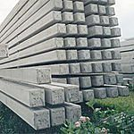

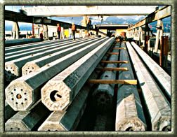
Négy út a mélybe
Az előregyártott cölöpöt négyféleképpen juttathatjuk le: veréssel, vibrálással, csavarással vagy lesajtolással. A módszer a talajtól, a cölöptől és – egyre gyakrabban ez dönt – a környezettől függ: mennyi zajt és rezgést bírnak el a szomszédok.
Verés és vibrálás
Verés: mechanikus (ejtőkos), pneumatikus, gőz- vagy dízelkalapácsos – a korszerű önjáró cölöpverő gépeken jellemzően hidraulikus kos dolgozik. Vibrálás: közönséges vibrálás, vibrációs verés, vagy öblítéssel egyidejű vibrálás. A vibrálás elsősorban szemcsés talajban hatékony: a talaj önrezgésszámához hangolt rezgés a talaj ellenállását ideiglenesen a minimumra csökkenti.
Sajtolás és csavarás
Lesajtolás: verés és vibrálás nélkül, „nyomással” – puhább talajban, csak kisebb teherbírású cölöpöknél (főleg mikrocölöpözésnél) jön szóba, cserébe sokkal kisebb a zaja. Csavarás: a talajcsavar „dugóhúzószerűen” menetet vág a talajba – ahol erre a talaj alkalmas, csendes és gyors (lásd 3.6).
Cölöpverés – ütésről ütésre
Verésnél a kos minden ütése energiát ad a cölöpnek, a talaj pedig a köpenyen és a talpon ellenáll. Puha rétegben a cölöp ütésenként centimétereket halad, a teherbíró rétegben viszont a beverődés (az ütésenkénti süllyedés) lecsökken. A gépkezelő ezt naplózza: a verési napló ütésszám–mélység görbéje a cölöp „önéletrajza”.
Ha a beverődés szinte nullára csökken, a cölöp „beáll”, elakad – nem megy tovább. Ez jó hír, ha a tervezett teherbíró rétegben történik, és rossz, ha egy vékony kemény betelepülés állítja meg a cölöpöt fölötte.
Verés nem alkalmazható kőzetben, sziklás talajban, kemény (köves) agyagban, erősen cementálódott talajban és nagyobb tömbös feltöltésben – és elég egyetlen vékonyabb ilyen betelepülés, hogy a cölöpöket ne lehessen kellő mélységig leverni. Ezért a talajfeltárásnak ezeket a rétegeket is meg kell találnia.


Az előregyártott vb. cölöp hosszát a gyártás előtt, a talajfeltárás alapján kell megválasztani. Ha a cölöp a tervezettnél előbb beáll (elakad), a fölösleget le kell bontani (fejezés); ha nem éri el a teherbíró réteget, toldani kell. Az acélcölöp ebben rugalmasabb: hegesztéssel csaknem tetszőleges hosszra toldható.
Vibrálás – a talaj „elfolyósítása”
A vibrátor (vibrációs kos) a cölöpre szorítva függőleges rezgést kelt. Ha a rezgésszámot a talaj önrezgésszámához hangolják, a szemcsék közötti kapcsolat ideiglenesen fellazul, a köpeny menti és a talp alatti ellenállás ideiglenesen a minimumra csökken – a cölöp szinte a saját súlyától és a gép nyomásától süllyed. Kötött talajban ez a hatás jóval kisebb, ezért a vibrálás elsősorban szemcsés talajok módszere.
A cölöpön végigvezetett vékony csöveken át öblítéssel segítik a vibrálást. Az öblítést a cölöpcsúcs elérése előtt 1–2 m-rel abba kell hagyni, hogy a talp alatti talaj ne lazuljon fel; utólag a cölöptalpat a csöveken keresztül injektálni is lehet.
A vibrálás nagy zajjal jár, ezt ún. árnyékolással próbálják csökkenteni. Az indításnál és a leállításnál a gép áthalad az alacsony rezgésszámokon – ilyenkor rezonálhatnak a közeli épületek is.
Rezgés a szomszédban
A cölöpverés és a vibrálás rezgése a talajban hullámként terjed, és a távolsággal csillapodik. Az épületekre a rezgéssebesség csúcsértéke (mm/s) a mértékadó: egy ipari vasbeton váz jóval többet elvisel, mint egy lakóház – egy műemlék vagy egy rezgésérzékeny gépekkel teli épület pedig még annál is kevesebbet.
Ezért egy belvárosi foghíjtelken, érzékeny szomszéd épület mellett a vert előregyártott vasbeton cölöp a legkockázatosabb választás – ott inkább zaj- és rezgésszegény technológia kell: fúrt (pl. CFA), csavart, sajtolt cölöp, vagy mikrocölöp.
Érzékeny környezetben a cölöpözés előtt rögzítik a szomszéd épületek állapotát (fotók, repedéstérkép), a munka alatt pedig rezgésmérővel figyelik a rezgéssebességet. Ha a mért érték a határ közelébe ér, a technológián kell változtatni.
Talajcsavar – dugóhúzó a kertben
A talajcsavar egyre inkább elterjed itthon is. Üreges acélszár, amelyen nem folyamatos spirál, hanem 40–60 cm-ként egy-egy „menet” van; jellemzően legfeljebb 2–3 m hosszú. Géppel (kis kotróra szerelt forgatófejjel), kisebb csavaroknál akár kézzel – egy átdugott fémrúddal vagy betekerő toldattal – hajtják a talajba.
Ott alkalmazható, ahol a csavar menetet tud vágni a talajba. Készülhet ideiglenesen (könnyen kicsavarható, visszanyerhető) vagy véglegesen. Kisebb terhelésű, jellemzően 1–2 szintes könnyűszerkezetes házakat, napelemparkokat, kerítéseket, mobil lelátókat alapoznak vele. Léteznek nagyobb átmérőjű, hosszabb, szakaszosan spirállal ellátott acél csőcölöpök is.
Előnyök
- Nincs zaj, alig van rezgés
- Nincs földmunka, nincs furadék
- Azonnal terhelhető, nincs kötési idő
- Ideiglenes célra visszanyerhető
Korlátok
- Kis teher – könnyű szerkezetekhez
- Rövid, jellemzően 2–3 m
- Köves, kemény talajban nem csavarható
- Az acélt a korrózió ellen védeni kell

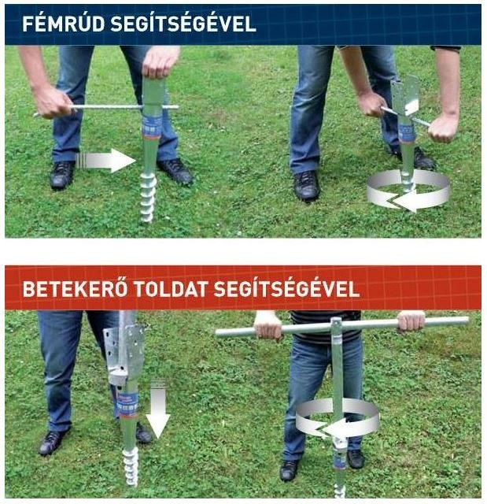
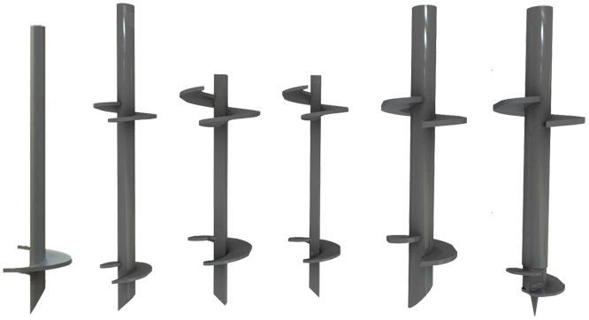


Ellenőrizd magad
Franki és csavart cölöpök
A talajkiszorítás kész elem nélkül is működik. A Franki-cölöpnél egy béléscsövet verünk le, és a betont helyben, döngölve dolgozzuk be; a csavart cölöpnél egy különleges fúrófej fúrás közben tolja szét és tömöríti a talajt, majd a fúrószáron át betonozunk. Mindkettő helyben készülő vasbeton cölöp – és egyiknél sem jön fel számottevő talaj: a helyén marad, csak tömörebb lesz.
Mi történik a talajjal?
A cölöp körüli talaj sorsa a technológián múlik. Talajhelyettesítésnél a talajt kiemeljük (kifúrjuk), az üreget kibetonozzuk – közben a furat fala kissé fellazulhat. Talajkiszorításnál gyakorlatilag nem jön fel talaj: a cölöp vagy a fúrófej a talajt oldalra tolja, a szemcsék egymáshoz préselődnek, a talaj tömörödik.
A tömörebb talaj nagyobb súrlódást ad a köpeny mentén. Előregyártott (vert) cölöpnél ezért a talp- és a köpenymenti ellenállás is nő, a helyben készülő csavart cölöpnél pedig elsősorban a köpenymenti ellenállás.
Franki-cölöp – döngölt talp, „hagyma”
A Franki-cölöp visszanyert köpenycsöves, „monolit” vert, nagy teherbírású betoncölöp. A leggyakrabban 46–52 cm átmérőjű, 30 mm falvastagságú, 13 m hosszú (toldható) béléscső aljába kb. 1 m magasan száraz betont (vagy kavicsot) töltenek, és azt a csőben egy 3 t-ás ejtőkossal döngölik. A dugó a súrlódás révén magával húzza a csövet – a cső úgy jut le, hogy sem talaj, sem víz nem kerül bele.
A teherbíró rétegben a csövet a verőállványhoz rögzítik, és erőteljes döngöléssel kiverik belőle a betont. Amikor már csak 30–40 cm beton marad a csőben, újabb és újabb adagokat döngölnek ki: így alakul ki a talpnál a kiszélesedő „hagyma”. Végül – vasalás után – újabb betonadagolás és döngölés mellett a csövet visszahúzzák.
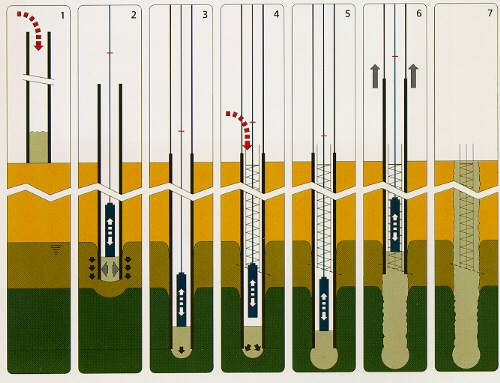
Hazánkban egészen a múlt század végéig – elsősorban hidak és ipari épületek alapozására – sokat alkalmazták, mára szinte teljesen eltűnt.


Csavart cölöp – fúrás föld nélkül
Az utóbbi két évtizedben egyre inkább „térhódító” a fúrt, helyben betonozott, talajkiszorításos csavart cölöp. Az üreges fúrószár végén egy különleges fúrófej van: a gép csavarás és tolás közben hajtja le, a fej maga körül széttolja és tömöríti a talajt – és nem hozza fel. A kívánt mélységben indul a nyomás alatti betonozás a fúrószáron át, a szár folyamatos forgatása és kiemelése közben; a friss cölöpbe végül vibrálással juttatják le a vasalókosarat.
Előnye, hogy nincs dinamikus és zajhatás, és csak csekély furatanyag kerül a felszínre – annak elszállításáról, deponálásáról nem kell gondoskodni. A tömörítés miatt nagyobb a fajlagos teherbírás, mint egy azonos méretű talajhelyettesítéses cölöpé. A korszerű gép a fúrás és a betonozás adatait folyamatosan méri és rögzíti.
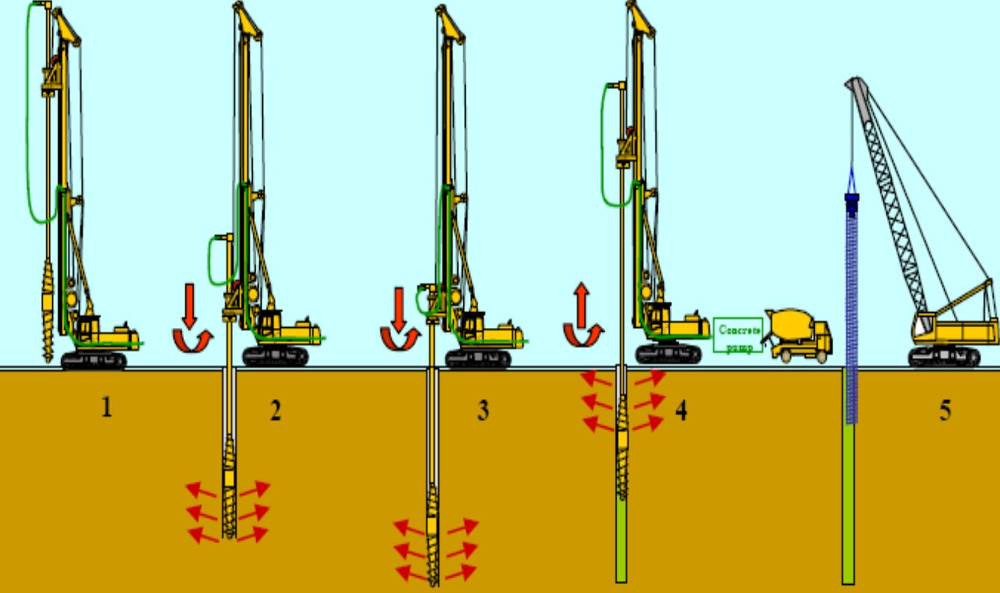
Laza vagy közepesen tömör szemcsés, átmeneti, illetve gyengén kötött (puha–gyúrható) talajban, közepes terhelésű ipari létesítmények alapozására gazdaságos és gyors. Terjedését legfeljebb a kisebb átmérő miatti kisebb tartószerkezeti teherbírás korlátozhatja.
Sima köpenyű
A kiszorító fej sima palástú cölöpöt hagy maga után. Ilyen rendszer például az Omega, a Fundex, a De Waal és a CHD.
Csavarmenetes köpenyű
A csavar alakú fej menetes palástú cölöpöt „vág” a talajba – a menetek tovább javítják a kapcsolatot a talajjal. Ilyen például a Screwsol.
Full Displacement Pile (FDP)
„Teljes kiszorítás”: a vastag fúrócső és a kiszorító test a teljes cölöptérfogatnyi talajt oldalra tolja, a felszínre gyakorlatilag semmi sem jön.
A fúrófejek rajza szemléltető vázlat; a cégek különböző fúrófejeket fejlesztettek ki, a részletek rendszerenként eltérnek.


Egymás mellett
| Cölöp | Készítés | Átmérő, hossz | Zaj, rezgés | Furadék | Mikor jó? |
|---|---|---|---|---|---|
| Vert előregyártott vb. | kiszorításos, kész elem | 30×30–40×40 cm, 4–12 m; csőcölöp D = 25–50 cm, 20–22 m | nagy zaj és rezgés | nincs | szabad terület, nincs kemény betelepülés |
| Franki | kiszorításos, helyben döngölt | ≈ 60 cm, legfeljebb 16–18 m; hagymás talp | döngölés: jelentős | nincs | nagy teher, jó teherbíró réteg a talpnál |
| Csavart (helyszíni) | kiszorításos, fúrt, nyomás alatt betonozva | 300–600 mm, kb. 20 m-ig | nincs dinamikus hatás | csekély | laza–közepes szemcsés, puha kötött talaj, közepes teher |
| CFA (összevetésül) | helyettesítéses, folytonos spirál | 40–120 cm, 6–22 (24) m | zaj- és rezgésszegény | a teljes cölöptérfogat | szinte minden talaj (lásd C05) |
Ellenőrizd magad
Fúrt cölöpök
A fúrt cölöpnél nem félretoljuk a talajt, hanem kivesszük a helyéről, és az üreget betonnal töltjük ki. Ez a talajhelyettesítés: a cölöp mindig a helyszínen, kör keresztmetszettel, betonból vagy vasbetonból készül, és mivel nincs verés, jellemzően csendes és rezgésszegény. Cserébe egy ideig üres furat tátong a talajban – és ennek a furatnak meg kell maradnia, amíg a beton a helyére nem kerül.
A három lépés
Minden talajhelyettesítéses cölöp ugyanarra a három lépésre bontható – a technológiák csak abban különböznek, hogy az egyes lépéseket milyen eszközzel, milyen sorrendben és mennyire „egyszerre” végzik:
- Talajkiemelés – rövid vagy folyamatos spirállal, markolóval vagy dobfúróval, esetleg öblítéssel.
- A furat állékonyságának biztosítása – béléscsővel, bentonitos zaggyal, a spirálon maradó talajjal, vagy (ha a furat magától is áll) megtámasztás nélkül.
- A cölöp elkészítése – betonozás, majd a vasalás benyomása a friss betonba, vagy fordítva: előbb a vasalókosár a furatba, utána a betonozás.
A legkényesebb a második lépés. Amíg a beton nincs a helyén, a furat fala szabad felület: ha nem tartjuk meg, beomlik, a talpán fellazult talaj gyűlik össze, és a kész cölöp sem a talpán, sem a köpenyén nem azt tudja, amire terveztük.
A fúrt cölöpök családfája
Kattints egy technológiára – a fejezet megfelelő részére ugrasz.
- Talajhelyettesítéses (fúrt) cölöp
- Részleges talajkiszorítás
- Talajhelyettesítés
A folyamatos spirál lehajtásakor a furadék csak részben nyomódik ki a furatból, a többi a spirálon marad, és a falat támasztja. A talaj egy része tehát nem kerül ki, hanem oldalra tolódik – ezért sorolják a CFA-t a részleges talajkiszorításos fúrt cölöpök közé. Teljes talajkiszorítást a csavart cölöp fúrófeje ér el, amely szinte semmilyen furatanyagot nem hoz fel.
Talajkiemelés


Az eszközöket gyakran kombinálják: felül a törmelékes feltöltést markolóval termelik ki, alatta már spirállal fúrnak tovább. Öblítéses fúrásnál a fúrófej csak feltöri, fellazítja a furat talpán lévő talajt, az anyagot pedig az öblítőfolyadék szállítja ki.
A rövid spirál és a dobfúró szakaszosan dolgozik: le, megtölt, fel, ürít – és újra. A folyamatos spirál ezzel szemben egyetlen menetben hatol le a teljes mélységig, a furadék a menetei között marad, ezért nincs szükség külön furatmegtámasztásra.
A furat talpán a cölöp alatt soha ne maradjon fellazított, leülepedett vagy beomlott talaj: az a cölöp talpellenállását jelentősen csökkentheti. Ezért tisztítják a talpat betonozás előtt (dobfúróval, tisztítókanállal, zagyos furatnál a zagy cseréjével).
Furatállékonyság
A cölöpkészítés egyik legkritikusabb része. A furat falát négyféleképpen tarthatjuk meg:
- Béléscsővel. A talajkiemeléssel párhuzamosan acélcsövet hajtunk le, amely megakadályozza a talaj és a talajvíz betörését – a cső mozgatása és toldása viszont nehézkes, lassú. Szemcsés talajban a csőnek feltétlenül a földkiemelés előtt kell járnia. Ha a fúrás víz alá ér, a furatban pótolni kell a talajjal kiemelt vizet, különben a magasabb külső vízszint miatt a talajvíz a talpon betör, és megbontja a talajt.
- Bentonitos zaggyal. A fúróiszap kiszorítja a talajvizet, és túlnyomásával megtámasztja a furat falát.
- Talajjal. Folyamatos spirálnál (CFA) a spirálon maradó talajdugó támasztja meg a környező talajt – nincs szükség külön technológiára, ami jelentős előny.
- Sehogy – mert nem kell. Kötött talajban, talajvíz felett, legfeljebb 8–10 m mélységig a furat rövid ideig megtámasztás nélkül is állékony, de a kiemelés után rögtön ki kell betonozni.
A furat beomolhat: a cölöptestben folytonossági hiány jön létre, nő a szükséges betonmennyiség, a fellazult fal pedig jelentősen csökkentheti a köpenymenti ellenállást. A talpra hulló talaj a talpellenállást rontja.
Talajvíz alatt a béléscsőből kiemelt talajjal vizet is kiemelünk. Ha a csőben a víz lejjebb kerül, mint kint, a különbség áramlást indít a cső alja felé: a víz a talpon felfelé tör be, magával ragadja a szemcséket, és fellazítja a talajt pont ott, ahol a cölöp talpa ülni fog. Ezért a csőben a vízszintet legalább a külső szinten tartják.
A bentonitos zagy sűrűbb a víznél, és a furat falán vékony, kevéssé áteresztő réteget (iszaplepényt, filterpogácsát) képez, amelyen keresztül a túlnyomása a talajra adódik át. Ehhez a zagyszintet a talajvízszint felett kell tartani – a részleteket a résfalaknál tárgyaljuk (C07).
Betonozás és vasalás
A cölöp két sorrendben készülhet: betonozás – tömörítés – vasalás, vagy vasalás – betonozás – tömörítés. A betonozás történhet gravitációsan vagy pneumatikusan (nyomással): betonozó tölcsérrel, a béléscsövön át, illetve CFA-nál a fúrószáron keresztül.
- Tömörítés. Beejtett döngölővel (csömöszöléssel – folyós betonban nem), vagy a béléscső „visszaverésével”. Nyomás alatti betonozásnál már a bevitel is tömörít.
- A beton ne essen szét, és ne adjon le vizet: a szétosztályozódott beton kavicsfészkes, gyenge szakaszt hagy a cölöpben.
- Vasalás. Az armatúrát vagy utólag nyomják, vibrálják be a friss betonba (CFA), vagy nagyobb átmérőjű, hosszabb cölöpnél előre a furatba helyezik, és utána betonoznak. A központos helyzetet és a betontakarást távtartók biztosítják.
- Víz vagy zagy alatt kontraktorcsővel betonoznak: a cső alulról töltődik fel, a beton felfelé szorítja ki a zagyot, a cső vége pedig végig a friss betonba merül.


CFA-cölöp – folyamatos spirállal
Az utóbbi két-három évtizedben hazánkban ez a cölöpözési technológia dominál. Neve az angol Continuous Flight Auger rövidítése; német nyelvterületen SOB-, Franciaországban STARSOL-cölöpként ismert. A CFA-cölöpöt folytonos, üreges fúrószárú fúróspirállal készítik, és a fúrószáron keresztül, a fúró visszahúzása közben nyomnak betont a furatba.
- Kitűzés, pontraállás. Az első munkafázis a cölöp helyének kitűzése és a gép pontraállása.
- Furatkészítés. Az üreges fúrószár alját elvesző sapka vagy „csapóajtó” zárja. Lehajtás közben a furadék csak részben nyomódik ki, a spirálon maradó talajdugó folyamatosan támasztja a furat falát.
- Betonozás. A kívánt mélységben a fúrószáron át túlnyomással betont pumpálnak. A beton feltolja a spirált (rajta a talajdugóval), amit húzással is segíteni kell. A betont nem kell vibrálni: a folyós konzisztencia és a nyomás alatti bedolgozás biztosítja az öntömörödést.
- Vasalás. A cölöpöt általában a munkaszintig betonozzák fel, hogy a vasalókosarat a friss betonba lehessen süllyeszteni.
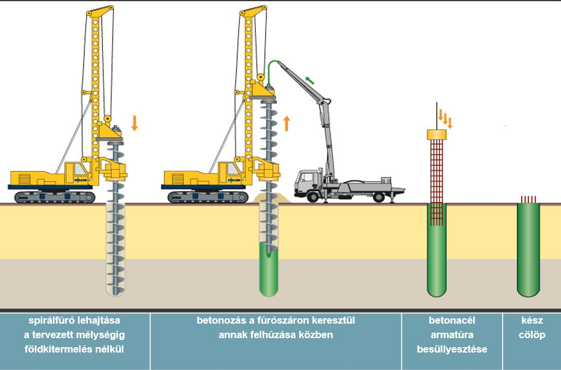
Mikor jó választás?
- minden talajban, kivéve a laza, folyós talajokat – finom homokban különös gondossággal
- sokféle cölöpátmérőt és -hosszt igénylő projekteken
- változékony teherbírási igénynél
- rövid határidős munkán
- zaj- és rezgéskorlátozás esetén
Főbb jellemzők, korlátok
- egyszerű gépészet, gyors fúrási sebesség
- automata monitorozás: minden cölöpről jegyzőkönyv
- legfeljebb kb. 22–24 m hosszú – a spirál hosszát a gép árboca szabja meg
- a vasalókosarat csak a friss betonba lehet besüllyeszteni – hosszú kosárnál ez nehéz
- túl gyors húzásnál a cölöp elvékonyodhat (nyakasodás)
Minden cölöpről jegyzőkönyv
A korszerű gépek a cölöpkészítés során folyamatosan mérik és rögzítik a fúrási ellenállást, a fúrószár tetején a betonnyomást, a bedolgozott betonmennyiséget és a húzási sebességet, és minden egyes cölöpről automatikus jegyzőkönyvet készítenek. Ebből utólag is kiderül, ha valahol kevesebb beton jutott a furatba, mint amennyi az elméleti térfogat.
A legjellemzőbb hiba a nyakasodás: ha a spirált gyorsabban húzzák, mint ahogy a beton a felszabaduló teret kitölti, a furat fala a beton helyére nyomódik, és a cölöp azon a szakaszon elvékonyodik. Ezért a betonnak mindig enyhe túlnyomással, a húzással összehangoltan kell érkeznie – a betonfogyás jellemzően valamivel több is az elméletinél.

Köpenycsöves (béléscsöves) cölöp
Szélsőséges talajviszonyok között is alkalmazható technológia. A védőcső lemélyítése párhuzamosan halad a furatanyag kitermelésével – dob- vagy spirálfúróval, esetleg markolóval –, mégpedig úgy, hogy a cső általában, szemcsés talajban feltétlenül a földkiemelés előtt jár. Víz alatt a furatban pótolják a kiemelt vizet.
A furat falát a felbetonozásig a védőcső támasztja meg, ezért magas víztartalmú, iszapos talajokban is biztonsággal alkalmazható. A cölöpöt a köpenycső megfelelő ütemű visszahúzása közben betonozó csővel betonozzák fel. A cső lehet visszanyert (betonozás közben kihúzzák) vagy bennmaradó (a talajban marad, pl. a cölöptest védelmére). Fő alkalmazási területe a más technológiával el nem érhető mélységek és átmérők, illetve a nagy teherbírás. A hazai gyakorlatban eddig a 30–40 m-es mélység elegendőnek bizonyult.
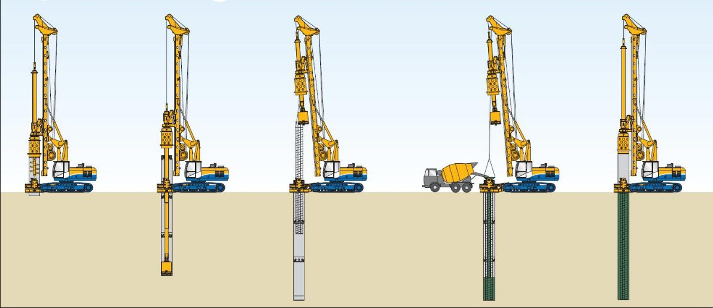
Alkalmazási terület
- különösen kedvezőtlen talajokban (is)
- nagy, legalább 80 cm-es átmérőnél
- nagy teherbírási igénynél
Főbb jellemzők
- összetett gépészet
- lassabb fúrási sebesség, mint a fúrószáras eljárásoké
- a cső mozgatása, toldása nehézkes
Bentonitzagyos (zagymegtámasztásos) cölöp
A végeredmény nagyon hasonló a béléscsöves cölöphöz, csak itt a furat állékonyságát a fúróiszap, a bentonitzagy biztosítja. Elsősorban nagy átmérőjű, nagy mélységű cölöpöknél terjedt el: a fúródobos földkiemelés és a zagyos megtámasztás miatt a fúrógép kapacitása nem korlátozza az elérhető mélységet. Hazánkban elsősorban nagy fesztávú hidak alapozásaként használják.
- pontraállás, előfúrás, vezetőcső elhelyezése;
- a fúrófolyadék (zagy) betöltése;
- a talaj kiemelése rövid spirállal vagy dobfúróval a kívánt mélységig, zagyos megtámasztás mellett;
- a cölöptalp tisztítása, a vasalat behelyezése, a betonozás megkezdése kontraktorcsővel;
- betonozás a terepszintig – a beton alulról kiszorítja a zagyot;
- a vezetőcső eltávolítása.
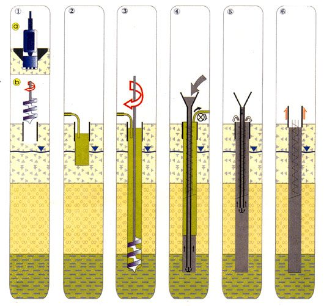
Alkalmazási terület
- bármely talajban
- nagy, legalább 80 cm-es átmérőnél
- nagy teherbírási igénynél
Főbb jellemzők
- összetett gépészet, zagykeverő és -tisztító telep kell
- lassabb fúrási sebesség
- a zagyot a betonozás után kezelni kell
Megtámasztás nélküli furat
Kötött talajban, talajvíz felett, legfeljebb 8–10 m mélységig a furat megtámasztás nélkül is megáll – de csak rövid ideig, ezért a kiemelés után rögtön ki kell betonozni. A furatot rövid spirállal vagy markolóval készítik; a beton tölcsérrel, gravitációsan kerül a helyére.
Az 5–6 m mélységig markolt, kibetonozott testet markolt tömbalapnak, más néven kútalapnak is nevezik – ez már átmenet a síkalap és a mélyalap között (a „valódi” kút- és szekrényalapokról a C08-ban lesz szó).
Ugyanaz az agyag, amely szárazon egy ideig megáll, talajvíz alatt vagy egy szemcsés betelepülésnél gyorsan megindulhat. Ha a fúrás vizet ér, a megtámasztás nélküli technológia már nem alkalmazható.
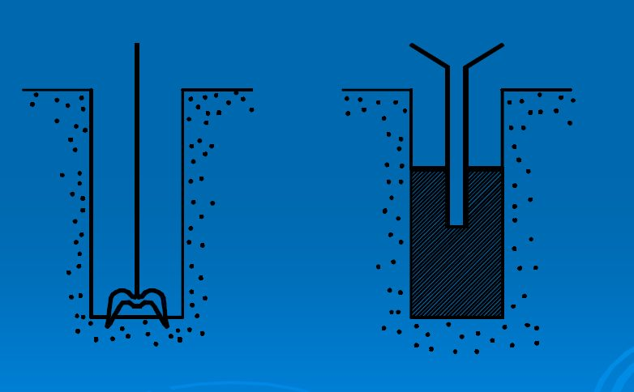
Melyiket válasszam?
| CFA | Köpenycsöves | Bentonitzagyos | Megtámasztás nélküli | |
|---|---|---|---|---|
| Átmérő | 40–120 cm | 80–180 cm | 80–180 cm | rövid spirál, markoló mérete szerint |
| Hossz | 6–22 (24) m | 15–50 (100) m | 15–50 m | ≤ 8–10 m |
| Talaj | minden talaj, kivéve a laza, folyós talajokat; finom homokban gondosan | különösen kedvezőtlen talajban is | bármely talaj | kötött talaj, talajvíz felett |
| Furatállékonyság | talajdugó a spirálon | acél béléscső | bentonitzagy | a talaj saját szilárdsága |
| Betonozás | a fúrószáron át, nyomással | betonozó csővel, a cső visszahúzása közben | kontraktorcsővel, zagy alatt | tölcsérrel |
| Vasalás | utólag, a friss betonba | előre, a furatba | előre, a furatba | előre vagy utólag |
| Gépészet, sebesség | egyszerű, gyors | összetett, lassabb | összetett, lassabb | egyszerű |
Mikrocölöp, jet, mélykeverés
Vannak technológiák, amelyek se nem tisztán talajkiszorításosak, se nem tisztán talajhelyettesítésesek – a végeredményük mégis cölöpként (is) működik. Ilyen a pinceajtón is beférő gépekkel készülő mikrocölöp, a talajt 400–600 bar nyomású sugárral szétvágó jet-grouting, a talajt helyben összekeverő mélykeverés és a kavicsból tömörített kőoszlop. Ezekkel lehet egy százéves bérház alá nyúlni, foghíjtelken munkagödröt zárni, vagy puha talajt teherbíróvá tenni.
Mikrocölöp
Ø ≤ 300 mm, injektált köpennyel. Kis gép, szűk hely, meglévő épület aláfogása.
Jet-grouting
Nagy energiájú sugár aprózza fel a talajt és keveri kötőanyaggal: „talajbeton” oszlop.
Mélykeverés
Forgó keverőszár keveri össze helyben a talajt a kötőanyaggal – oszlop, tömb vagy fal.
Kavicscölöp
Rezgő szárral tömörített kavicsoszlop: merevít, drénez – átmenet a talajjavítás felé.
Mikrocölöpök
Mikrocölöpnek a legfeljebb 250–300 mm törzsátmérőjű fúrt cölöpöket, illetve azokat a vert cölöpöket nevezzük, amelyek törzsátmérője vagy legnagyobb keresztmetszeti mérete nem nagyobb 150 mm-nél. Karcsú elemek: a terhet a talajra adják át, és mérséklik az alakváltozásokat. Palást- és talpellenállásuk rendszerint habarcsinjektálással növelhető, a törzsük lehet állandó keresztmetszetű, teleszkóposan változó, törzs- vagy talpbővítéses.
Anyaguk acél (acélcső, merev acélelem) vagy más erősítő anyag, cement- és betonhabarcs vagy beton – leggyakrabban ezek kombinációja: egy acélbetét, körülötte injektált habarcstest.
Az igazi erejük a géppark: a fúróberendezés olyan kicsi, hogy befér egy pincébe, alacsony belmagasságú vagy nehezen megközelíthető helyre, és rezgésmentesen dolgozik egy meglévő épület falai mellett.
Épület-rekonstrukcióban
- túlzottan kihasznált alap megerősítése,
- pinceszint lemélyítése,
- megnövekedett terhelés felvétele (ráépítés, funkcióváltás),
- melléépítés miatti alapmélyítés,
- alap alatti üregnyitás (pl. közműalagút) miatti kiváltás.
További felhasználás
- új szerkezetek alapozása – különösen nagyon heterogén talaj- vagy kőzetviszonyok esetén,
- süllyedések, elmozdulások mérséklése,
- rézsűk állékonyságának javítása, megtámasztó fal, talajerősítés,
- felúszás elleni lehorgonyzás (húzott elem: pl. mélygarázs-lemez, medence talajvíz alatt).
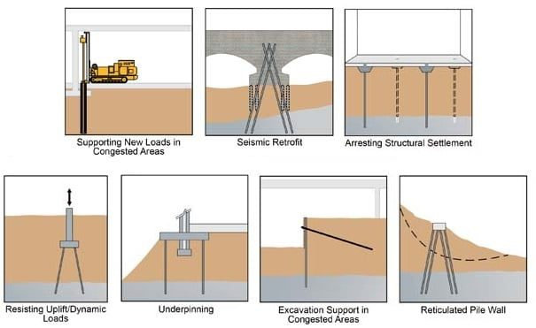
Hogyan készül? – a hazai gyakorlat három útja
Fúrt, injektált
Talajhelyettesítéses fúrás folyamatos spirállal vagy öblítéssel, majd a furat kitöltése habarccsal – utólagos injektálással vagy anélkül.
Acélcső-betétes
A furatba erősítésként kb. 100–200 mm átmérőjű acélcsövet helyeznek, a gyűrűs teret és a csövet habarccsal töltik ki. Laza, omlékony talajban béléscső védelmében fúrnak.
Merevbetétes, injektálásos
Elvesző fúrófejjel ellátott, toldható üreges acélrudat hajtanak le (pl. Ischebeck Titan), és fúrás közben folyamatosan injektálnak a rúdon át.
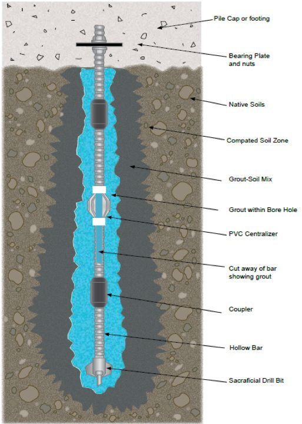

A merevbetétes mikrocölöpnél fúrás és injektálás egy menetben történik: az üreges rúd egyszerre fúrószár, injektálócső és végleges teherhordó betét. A fúrófej elvész, a rúd a talajban marad. A folyamatos injektálás nyomán a rúd körül egy 20–50 mm-es cementtest, azon kívül egy 30–80 mm vastag, cementtel átitatott talajköpeny alakul ki – a köpeny „érdes”, ezért jó a köpenymenti ellenállás.
A karcsú mikrocölöp teherbírásának számításakor a talpellenállást figyelmen kívül hagyjuk: csak a köpeny dolgozik. A köpenyellenállásra vannak ajánlások, de a készítés módja meghatározó, ezért indokolt próbaterhelést végezni. A kis átmérő miatt a kihajlással szembeni ellenállást külön vizsgálni kell, ha a talajréteg drénezetlen nyírószilárdsága cu < 10 kPa.
Jet-grouting
A jet-grouting (jethabarcsosítás) a talaj vagy gyenge kőzet felaprózása, kötőanyaggal való összekeverése és részleges helyettesítése. A felaprózást nagy kinetikus energiájú folyadéksugár végzi, amely többnyire maga a kötőanyag – általában víz-cement keverék. A talaj szerkezetét szétroncsolják, a keletkező résekbe behatoló cementszuszpenzió a talajjal megkötve „talajbetont” hoz létre. A sugár sebességével szabályozható, mekkora talajtömeget erodál.
A hengeres elem a jet-oszlop (jetcölöp), a habarcsosítással kialakított sík elem a jet-panel. A mélyalapozások közé soroljuk, de sokoldalú: új szerkezetek mélyalapozása, meglévő szerkezet alapsíkmélyítése és megerősítése, aláfalazás, süllyedéskompenzáció, kevéssé vízáteresztő zárófalak, munkatérhatárolás, földtömeg-erősítés, alagútépítési segédszerkezet, talajfolyósodás elleni védekezés.
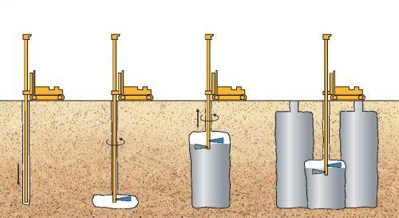
Két fázis: fúrás és injektálás
- Fúrás: 100–200 mm átmérőjű furat a kívánt mélységig, fúrófolyadék segítségével. A fúrófej (a „monitor”) kialakítása és a nyomás a talaj minőségétől függ.
- Injektálás: a furat talpától kezdve a monitor 2–5 mm-es fúvókáin át 400–600 bar nyomással juttatják a kötőanyagot a talajba, a fúrórúd lassú forgatása és visszahúzása mellett.
- A berendezés: siló, keverő, nagynyomású szivattyú, fúrószár és fúvóka – a fúrógép kicsi, a szivattyútelep félreállhat, akár egy udvarban.
A négy változat – hány fúvókát „kapcsolunk be”?
Szimpla jet
Egyetlen fúvókán át, 400–600 bar nyomással csak cementszuszpenziót nyomnak a talajba a visszahúzás-forgatás során.
Levegős dupla jet
Az azonos nyomású cementsugarat 5–6 bar nyomású levegőburok veszi körül – így a hatótávolság megnő.
Vizes dupla jet
A talajt nagy energiájú vízsugár aprózza fel; a cementálás egyidejűleg, külön fúvókán belövellt habarcssugárral történik.
Tripla jet
Légsugárral burkolt vízsugár aprózza fel a talajt, a cementáláshoz egyidejűleg külön fúvókán habarcsot lövellnek be.
A változatot a bekapcsolt fúvókák száma és az elérni kívánt átmérő dönti el. Az oszlop átmérője a talaj áteresztőképességétől függ: agyagban a legkisebb (legfeljebb 60–70 cm), kavicsban akár 150–200 cm is lehet. Egymásba metsző oszlopokkal folytonos fal, szükség esetén vízszintes lemez is készíthető.
Jet-panel: amikor nem forgatunk
Vékony panelek is képezhetők, ha belövéskor nem forgatják körbe a szárat, hanem két, egymással szemben álló fúvókával felhúzva épphogy „meglegyintik” a talajt. A szomszédos furatokból készült, V alakban egymáshoz csatlakozó panelekből vízzáró függönyfal lesz – kevesebb anyaggal, mint oszlopokból.
Injektálás közben figyelni kell a többletanyag – a felszínre visszafolyó iszap – akadálytalan kiáramlására. Ha a furat mentén elzáródik, a nyomás a talajban halmozódik: hidraulikus talajtörés alakulhat ki, szélsőséges esetben az épület vagy a környezet is megemelkedhet a többletcementtől.


Mélykeverés
A mélykeverés (deep soil mixing) során egy forgó, lapátos keverőszár a talajt helyben keveri össze a kötőanyaggal. Itt nem nagy nyomású sugár aprózza fel a talajt, hanem maga a keverőszerszám – az elem mérete ezért közel a szerszám méretével egyezik, és jóval kiszámíthatóbb, mint a jet-oszlopé.
A kötőanyagot (cementet, puha agyagban gyakran mész–cement keveréket) a szár végén juttatják ki: szuszpenzióként (nedves eljárás) vagy porként (száraz eljárás, főleg nagy víztartalmú, puha talajban). Egymásba metsző oszlopokból tömb, rács vagy fal készül; keverőmarós berendezéssel téglalap alakú falpanelek is, sekély, nagyon puha rétegekben pedig a teljes talajtömeget stabilizálják.
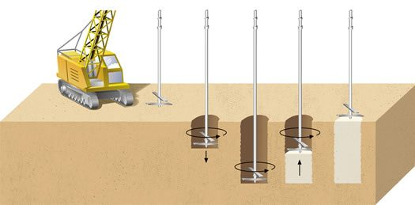


Kavicscölöp, vibrált kőoszlop
A kavicscölöp szemcsés anyagú „cölöp”: kavicsból vagy zúzottkőből áll. A rezgő szár (mélyvibrátor) lehajtása után a kavicsot szakaszosan, a szár csúcsán juttatják a talajba, a szár újbóli lenyomásával tömörítik és oldalra préselik, végül a felszínt kiegyenlítik. A kész oszlop bordás, a gyengébb rétegekben vastagabb.
A kőoszlop merevebb a környező talajnál, ezért a teher egy része rá koncentrálódik; közben függőleges drénként gyorsítja a konszolidációt, szemcsés talajban pedig a környezetét is tömöríti. Nem önálló teherhordó elem: a kőoszlop és a köztes talaj együtt dolgozik – ezért már átmenet a talajjavítás felé.
Rokon megoldás a merev betétes talajjavítás (rigid inclusion): merev, jellemzően vasalatlan beton- vagy habarcsoszlopok, amelyeket nem kötnek be az alaptestbe, hanem fölöttük teherelosztó szemcsés réteg (kavicspárna) van. A párnában kialakuló boltozódás a teher jelentős részét a betétekre tereli (a többit a köztes talaj viseli), a betétek pedig köpenymenti és talpellenállással adják tovább; felső szakaszukon – ahol a köztes talaj jobban süllyed – negatív köpenysúrlódás ébred. Ez talajjavítás, a kombinált alapozás egyik formája – nem cölöpalap –, átmenet a síkalap és a cölöpalap között.
Talajjavítások részletesen: Védekezés a káros süllyedések ellen ↗
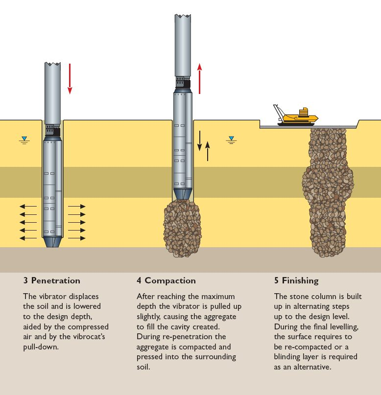
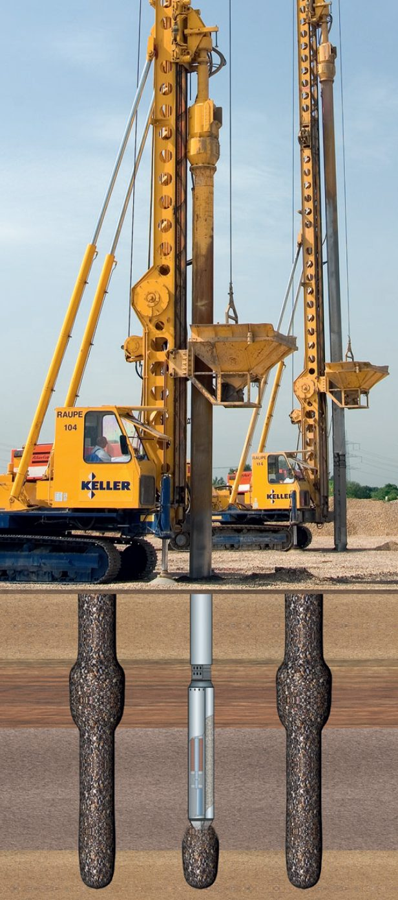
Összevetés
| Technológia | A talajjal mi történik? | Ami a talajban marad | Jellemző felhasználás |
|---|---|---|---|
| Mikrocölöp | kifúrjuk (vagy kiszorítjuk), a furatot injektáljuk – a köpeny átitatódik | acélbetét (rúd, cső) + cementtest, Ø ≤ 300 mm | aláfogás, alapmegerősítés szűk helyen, felúszás elleni horgonyzás |
| Jet-grouting | nagy energiájú sugár felaprózza, kötőanyaggal összekeveri és részben helyettesíti | „talajbeton” oszlop vagy panel; agyagban legfeljebb 60–70 cm, kavicsban akár 150–200 cm átmérővel | aláfalazás, munkagödör, vízzáró fal, alagút-segédszerkezet |
| Mélykeverés | keverőszár helyben, mechanikusan keveri a kötőanyaggal | kevert oszlop, tömb vagy falpanel | puha talaj javítása, töltések alatt, zárófal, munkatérhatárolás |
| Kavicscölöp | rezgő szár kiszorítja, a kavicsot a talajba tömöríti | tömörített kavicsoszlop (szemcsés „cölöp”) | süllyedéscsökkentés, konszolidáció gyorsítása, raszteres talajjavítás |
A jet-grouting igazán az ezredforduló körül terjedt el – világszerte és Magyarországon is. Azóta a belvárosi foghíjtelkek egyik legfontosabb módszere: a szomszéd ház alapja alá „nyúlva” egyszerre aláfalaz, megtámaszt és vízzár – és a kis fúrógép a legszűkebb telekre is bejut.
Résfalak
Képzelj el egy 60 cm széles, 30 méter mély árkot, amely tele van egy zöldesszürke, iszapszerű folyadékkal – és mégsem omlik be, pedig mellette talajvíz és homok nyomja. A résfal a terepszint alatt, egy ilyen függőleges falú árok vasalásával és kibetonozásával kialakított fal. A trükk a folyadékban rejlik: a bentonitzagy tartja meg a rést addig, amíg a beton a helyére nem kerül.
Fal a talajban
Hazánkban az 1960-as évektől alkalmazzák. A résfal réstáblák (panelek) sorozatából áll: minden táblát bentonitos zagy védelmében kimarkolnak, majd vasalókosarat engednek bele, és víz alatti betonozással kitöltik. Nagy mélységig, gyakorlatilag tetszőleges hosszban és alaprajzi elrendezésben készülhet – cserébe nagy költségű, speciális gépparkot igényel, ezért drága technológia.
Leggyakrabban földfalmegtámasztásként találkozunk vele: munkagödör határolásaként meglévő épület mellett, ahol vízzárás is kell, vagy úgy, hogy a résfal egyben a végleges építmény (mélygarázs, aluljáró, alagút) oldalfala is lesz. Ritkábban rövidebb réspillérek készülnek, a cölöpökhöz hasonlóan, tisztán alapozási szerkezetként – de fajlagosan általában a cölöp az olcsóbb.
- munkagödrök oldalhatárolása (támszerkezet),
- mélygarázsok, aluljárók végleges oldalfala,
- mélyalapozás (réspillérek, teherhordó résfal),
- szivárgásgátló fal: gátak alatti szivárgás megakadályozása, szennyezett területek utólagos körülzárása,
- partfal, lejtőstabilizálás.
Építés lépésről lépésre
A réselés történhet szakaszosan – ekkor előbb minden második (primer) tábla készül el, és csak utána a közbensők (szekunderek) –, vagy folyamatosan, a táblákat egymás után építve. A betonozás viszont mindig szakaszonként történik: a táblákat szakaszoló elemekkel (pallóval vagy csővel) határolják le. A szakaszos réselés menete:
- Résvezető gerenda készítése.
- A primer réstáblák „harapása”, nyitása zagyos megtámasztással.
- A primer táblák közepének kiharapása (sok esetben egy tábla csak két harapásból áll).
- A tábla armatúrájának elhelyezése (hossztól függően 1–3 kosár), majd betonozás két kontraktorcsővel.
- A közbenső tábla kiharapása.
- A közbenső tábla vasalásának beemelése és betonozása.
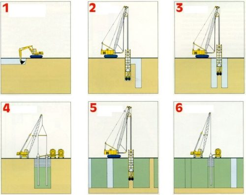
A résvezető gerenda – a résfal „sablonja”
A rés két oldalán, a terepszint közelében készülő két vasbeton gerenda a teljes munka alapja. Szélessége 20–30 cm, magassága 1,0–1,5 m; általában dúcokkal szembetámasztják egymással, ezért többtámaszú tartóként kell méretezni. Feladatai:
- védi a rés peremét, például a réselőgép hatása ellen,
- megtámasztja a laza, felső talajt,
- megakadályozza a zagyszivárgást a laza, feltöltött talajban,
- biztosítja a réselőszerszám vezetését,
- kitűzési alapbázis,
- vezeti a zagyot a ki- és bejuttatáskor.

A föld kiemelése: markoló vagy marógép
Résmarkoló (réskanál)
Merev rudas (Kelly) vagy kötélen függő, hidraulikus vagy mechanikus (köteles) erőátvitelű gép. A munka ciklikus: leengedés – harapás – kiemelés – ürítés – újra leengedés. Egy harapás hossza jellemzően 2,8 m: ez a réskanál nyitott szélessége, és egyben a legrövidebb kiemelhető réstábla is.
Hydrofraiser (résmaró)
Folyadékszállítású, fúró-maró berendezés: a talajt a bentonitzaggyal együtt, ellentétesen forgó marótárcsákkal aprítja és szivattyúzza ki; kint szétválasztják, a zagyot megtisztítják, és visszajuttatják a résbe. Nagy mélységig, bármely talajban és kőzetben is alkalmazható, pontosabb, szebb felületet ad – de nagyon drága.
Magyarországon a hydrofraisert eddig a 4-es metró építésénél vetették be: a Szent Gellért téren 40 m, a Fővám téren 48,3 m mély résfal készült, a Duna közvetlen közelében.


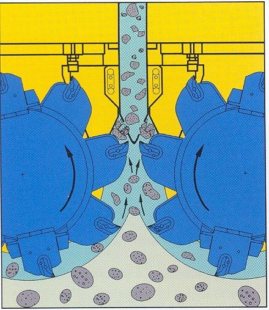

Szakaszoló palló és armatúra
A primer tábla két végére betonozás előtt szakaszoló pallót (vagy csövet) engednek. Ez kijelöli a réstáblák szakaszhatárát, helyet ad a duzzadószalag beépítésének (ez tömíti majd a táblák közti hézagot), védi az elkészült táblát a következő kiemelés során, és megvezeti a réselőszerszámot.
A rácsszerűen összeszerelt, átlós betétekkel kellően merevített acélkosarat rendszerint egy darabban, daruval emelik be a résbe. A beemelés feltétele a kosár statikai méretezése, a beépített segédszerkezetek, az emelő- és rögzítőelemek és az emelési terv szerinti mozgatás – egy 20–30 m-es kosár emelése komoly daruművelet.


A bentonitzagy
A réselt fal sajátos „alapanyaga” a víz és a benne diszpergált bentonit keveréke, a bentonitos résiszap (zagy). A bentonit igen finom szemcséjű, kolloid agyagféleség, amely döntő mértékben montmorillonitból áll. Réseléshez csak aktivált „Na” bentonit használható; a zagy viszkozitása CMC-vel (cellulózszármazékkal) növelhető.
A zagy két dolgot csinál egyszerre: megakadályozza a talajvíz beáramlását, és ellensúlyozza a rés oldalfalaira ható víz- és földnyomást. A keveréséhez a helyszínen külön keverő-ülepítő „telepet” kell biztosítani: itt készül, itt pihen, és ide tér vissza tisztításra a résből kiszorított vagy kiszivattyúzott zagy.
A bentonitzagy tixotróp: nyugalomban kocsonyásan megdermed, keverve, szivattyúzva újra folyik. A rés falánál a víz egy része beszivárog a talajba, a bentonitlemezkék pedig vékony, szinte vízzáró iszaplepényt raknak le a felületen – ezen keresztül adja át a zagy a nyomását a talajszemcséknek.
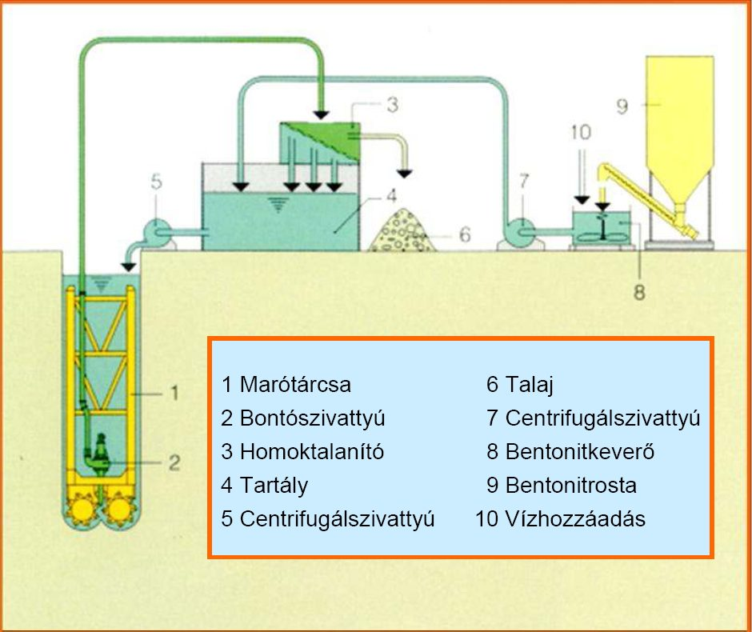
Résállékonyság – miért nem omlik be?
A résállékonyság dönti el, milyen hosszú réstáblát lehet egyszerre kiemelni. A legkisebb hossz 2,8 m – a réskanál egy harapása. Befolyásolja a talaj, a talajvízszint, a felszíni terhek, a rés mélysége, a résvezető gerenda, a zagy minősége és a rés hossza.
A rés falán kívülről a talajvíz és a föld nyom, belülről a zagy. A zagynyomásnak a víznyomással és a földnyomással együtt kell egyensúlyt tartania. Mivel a zagy csak kicsit nehezebb a víznél, a „győzelemhez” szintelőny kell: a zagyszintnek a résben mindig legalább 1,0–1,5 m-rel a talajvízszint felett kell lennie.
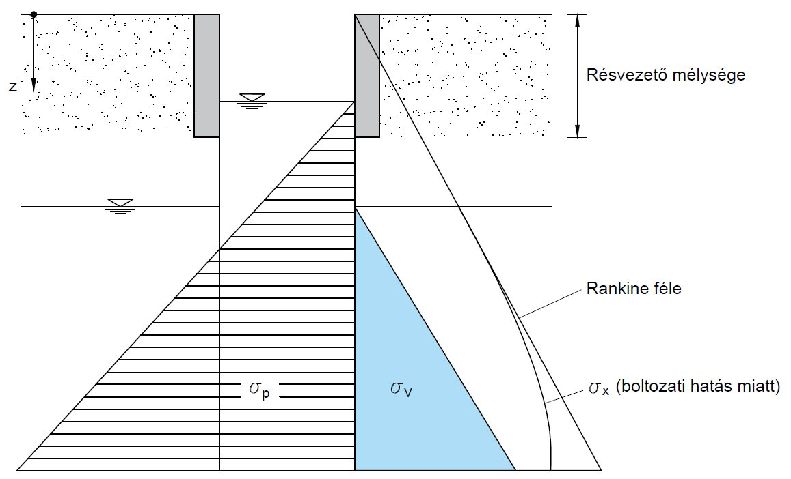
Silóhatás: a földnyomás nem nő a végtelenségig
Egy hosszú, sík falnál a földnyomás a mélységgel lineárisan nő (Rankine). A réstábla viszont véges hosszú: a mozogni „akaró” talajék a tábla két végénél a szomszédos, nyugalomban lévő talajra támaszkodik, boltozódás alakul ki – mint a gabonasilóban, ahol a fal súrlódása miatt alul sem nő a nyomás a végtelenségig. A földnyomás így a mélységgel egy határértékhez tart. Erre leggyakrabban a Schneebeli-képletet alkalmazzuk (de sok más is létezik):
Rövidebb réstábla → erősebb boltozódás → kisebb földnyomás → állékonyabb rés. Ezért nem lehet tetszőlegesen hosszú táblát nyitni, és ezért 2,8–5,6 m a jellemző táblahossz.
Hirtelen zagyveszteség – ha a zagy például egy durva kavicsrétegbe, régi csatornába vagy pincébe szivárog el – percek alatt lecsökkentheti a szintkülönbséget a talajvízhez képest. Ilyenkor azonnal zagyot kell pótolni, ezért a telepen mindig van tartalék. A labor zagyszint csúszkájával kipróbálhatod, mi történik.
Betonozás, ellenőrzés
A betonozás a víz alatti betonozás szabályai szerint, betonozótölcsérrel és kontraktorcsővel történik: a beton alulról felfelé tölti ki a rést, miközben a könnyebb zagyot kiszorítja – a zagyot kiszivattyúzzák, és visszavezetik a telepre. A kontraktorcső vége mindig a friss betonba merül, így a beton nem keveredik a zaggyal.
- A betonozást a réselés befejezése után mielőbb, de legkésőbb 4–5 óra múlva meg kell kezdeni.
- Előtte aljtisztítást kell végezni: a rés aljára ülepedett talaj- és homokszemcséket el kell távolítani.
- Folyamatos betonozásra van szükség, megszakítás nélkül.
- A fal felső, kb. 30–50 cm vastag része zaggyal keveredett, ezt el kell bontani, vésni, és újra kell betonozni – erre kerül a fejgerenda.
- A betonminőséget a fal elkészülte után általában radioaktív izotópos vagy szeizmikus vizsgálattal ellenőrzik.
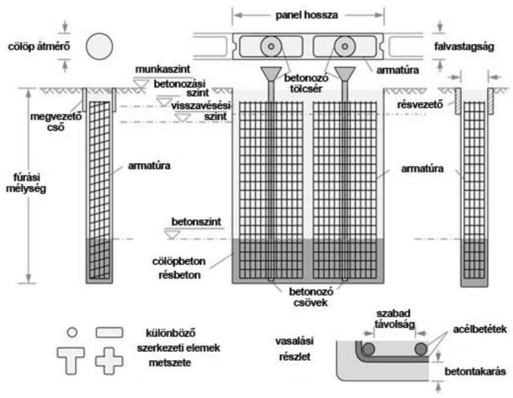


Mikor igen, mikor nem?
Előnyök
- tetszőleges alaprajzban variálható kialakítás
- nagy teherbírás, kis süllyedés
- mással gazdaságosan meg nem oldható szerkezetek építhetők, például földalatti garázsok
- vízszintes és függőleges teherviselés
- nincs szükség talajvízszint-süllyesztésre
- tetszés szerinti mélység, zsaluzás és dúcolás nélkül
- viszonylag zaj- és rázkódásmentes
- a felszerkezettel jól összekapcsolható, próbaterhelhető
Gondot jelent, ha…
- kőzet vagy nagyon kemény agyag van – ilyenkor csak hydrofraiserrel készülhet
- a réstáblákban régi épületmaradványok, közművek bukkannak fel
- üregek, pincék vannak
- a résállékonyság csak nagyon nehezen biztosítható: puha agyag, tőzeg, folyós (víz alatti) homok, nagyon magas talajvízszint
Egy belvárosi mélygarázsnál a résfal háromszor dolgozik: építés közben megtámasztja a munkagödröt és kizárja a talajvizet, később a garázs végleges oldalfala lesz, a felette álló épület terhét pedig mélyalapként viszi le. A szinteket gyakran felülről lefelé („top-down”) építik: a födémek egyben a fal megtámasztásai.
Kút-, szekrény- és keszonalapozás
Mielőtt a cölöpgépek mindent elárasztottak volna, a mélyalapokat lesüllyesztették: a terepen megépítettek egy nagy, vasbeton köpenyt, belülről kiszedték alóla a földet, és a saját súlyától lassan a teherbíró rétegig ereszkedett. Ma már szinte teljesen kiszorulóban van, de a múlt században ez volt a „klasszikus” mélyalapozás – a régebbi budapesti Duna-hidak pillérei is így készültek.
A süllyesztés elve
Mindkét módszer lényege ugyanaz: különböző – akár nagyon nagy – átmérőjű vasbeton köpenyfalat süllyesztenek le a saját súlyánál fogva, miközben belülről egy „csipegető” markolóval kiszedik a földet. Ha elérték a kívánt szintet (a teherbíró réteget), vagy fenéklemezt készítenek, vagy a kutat teljesen kibetonozzák – szekrényalapozásnál ez utóbbi nem jellemző.
A test akkor süllyed, ha a súlya (és az esetleges ballaszt) legyőzi a köpenyen ébredő súrlódást és a vágóél alatti talajellenállást. Talajvíz alatt a felhajtóerő csökkenti a hatékony súlyt. A süllyesztés tehát folyamatos egyensúlyozás: a markoló a vágóél alól is kiveszi a földet, a köpeny súrlódását kenéssel vagy vállkiugrással csökkentik.
Jellemzően akkor gazdaságos (és versenyképes a cölöppel), ha a teherbíró réteg nem túl mélyen van. Legtöbbször akkor alkalmazták, ha a talajvíz magasan állt, és az alapsíkot a vízszint alá kellett vinni: a köpeny közben megakadályozza a munkatér beomlását.
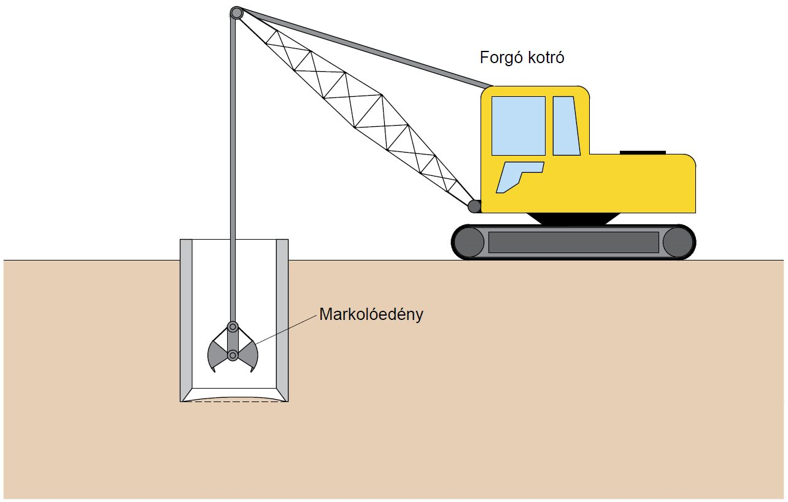
Kútalapozás
A kútalapok egyedi pillérek vagy falak alapozására szolgálnak: az építményt pontonként támasztják alá, felül vasbeton gerendaráccsal vagy vasbeton lemezzel kötik össze és zárják le őket – hasonlóan ahhoz, ahogy a cölöpöket a cölöprács fogja össze.
- nagy átmérőjű, alul-felül nyitott körfal: köpenyfal + vágóél,
- anyaga korábban mindig vasbeton (nem csak hengeres, hanem kúpos alakkal is), ma acél is,
- alul zárófenék, a belsejében sovány beton kitöltés,
- készülhetett egyben, teljes hosszban, vagy előregyártott elemekből, kútgyűrűkből,
- a köpenysúrlódás bentonitzaggyal vagy egyszemcsés gömbkaviccsal csökkenthető.
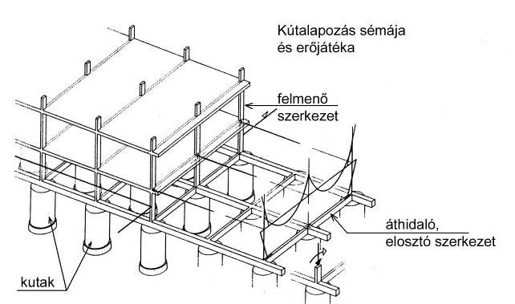
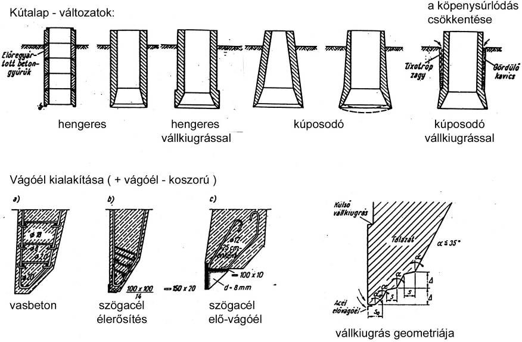
A vágóél – a kút „pengéje”
A köpeny alsó vége elkeskenyedő, élben végződő vágóél: ez hatol be a talajba, miközben belül a markoló kiszedi a földet. Készülhet tisztán vasbetonból, szögacél élerősítéssel, vagy egy kiálló szögacél elő-vágóéllel. A vágóél fölötti vállkiugrás és a kúposodó alak ugyanazt a célt szolgálja: a fal felső része ne dörzsölje végig a talajt, így kisebb súrlódást kell legyőzni.
Ma kútalapozás néven a visszanyerhető acél köpenycsöves markolt alapokat szoktuk emlegetni: egy acél béléscsövet süllyesztenek (vibrálnak) le folyamatos földkiemelés mellett, majd a kívánt mélység elérése után a csövet visszahúzzák, és közben kontraktorcsővel kibetonozzák a kutat – szükség esetén víz alatti betonozással.


Szekrényalapozás
Lényege azonos a kútalapéval, de míg a kutak pontonként támasztják alá az építményt, a szekrény alaprajza azonos az építmény – például egy hídpillér vagy egy teljes épület – alaprajzával, így sokkal nagyobb. A hidakat régen szinte mindig így alapozták.
Az alul-felül nyitott szekrényből belülről kotrással termelik ki a talajt – talajvízszint alatt víz alatti kotrással, szükség esetén víztelenítés mellett. A szekrényt szakaszosan építik és süllyesztik: egy ütem 6–8 m. Alul körben nagyobb vágóél van, belül merevítő rekeszfalak osztják cellákra. Jól kotorható talajban 40–50 m-ig is lesüllyeszthető.
Léteznek alulról zárt szekrények is: ezeket a nyílt vízen a helyükre úsztatják, majd vízzel feltöltve a mederfenékre süllyesztik. A felülről zárt szekrény a keszon – erről a következő részben.
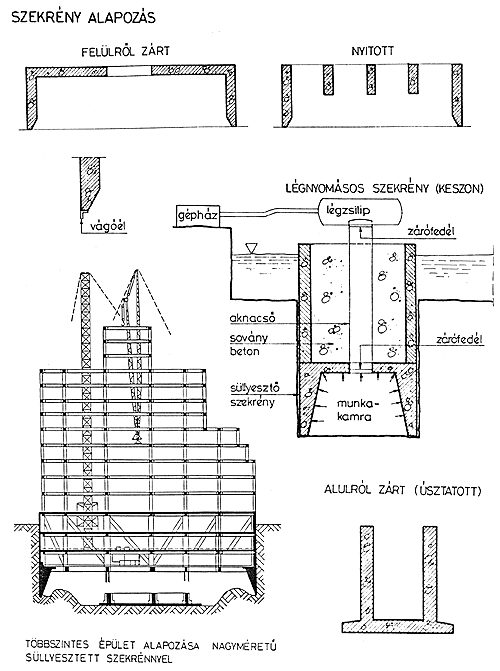
Egy genfi mélygarázs útja a mélybe
A szekrényalapozás nemcsak hidaknál működik. Egy genfi mélygarázst 57 m átmérőjű szekrényként, három ütemben süllyesztettek le −28 m-ig, kavicson, homokon és iszapon át a tömör, szilárd agyagig:
- az alsó rész megépítése és süllyesztése, kotrógéppel a szekrény belsejében,
- a felső rész betonozása – a súly is nő, ez segíti a további süllyedést,
- a teljes süllyesztés befejezése.
Süllyesztés közben a köpeny mellé tixotróp folyadékot sajtoltak a súrlódás csökkentésére, a végén pedig cementhabarcs-injektálással szorították ki a bentonitot – így a fal mögött nem maradt gyenge, folyós réteg.
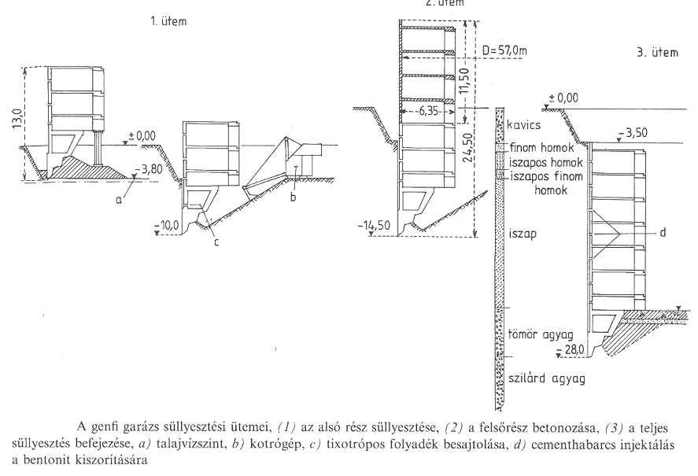
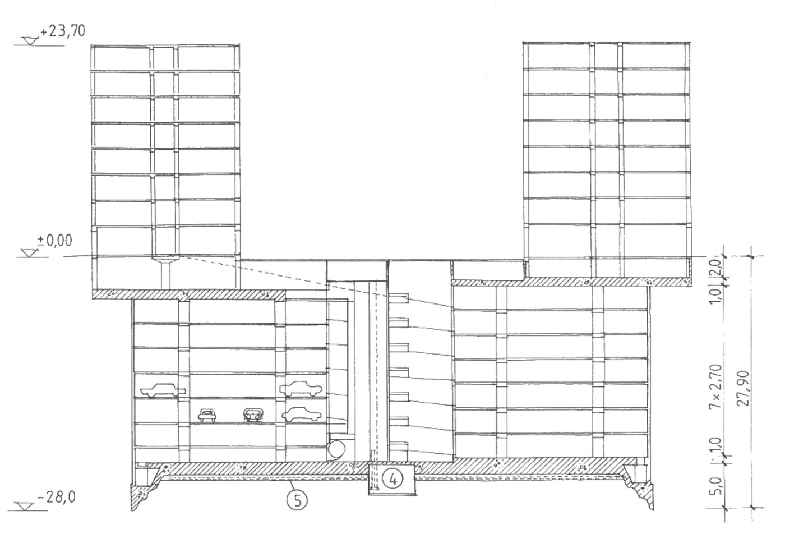
Keszon – munka a víz alatt, levegőnyomásban
A keszon („harang”) felülről zárt szekrény: alul egy munkakamra, amelyből a vizet túlnyomásos levegővel szorítják ki. Belül kis gépekkel és kézi munkával dolgoztak, a vágóél alól kitermelve a földet. Az emberek zsiliprendszeren keresztül jutottak le és fel – több órán át, hogy szervezetük hozzászokjon a nyomásváltozáshoz –, a földet egy másik zsilipen keresztül juttatták ki.
A levegő nyomásának legalább akkorának kell lennie, mint a víznyomásnak a vágóél szintjén: ezért minden 10 m vízmélység nagyjából 1 bar túlnyomást kíván. Ennek az emberi szervezet szab határt: a legnagyobb alkalmazott túlnyomás 3,2–3,5 bar volt, vagyis kb. 32–35 m-rel a vízszint alatt.
Nagyon veszélyes, egészségre káros munka volt: sokan meghaltak az építés közben és utána.
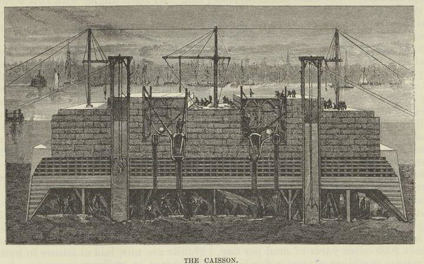
Nagy nyomáson több nitrogén oldódik a vérben és a szövetekben. Ha a munkás túl gyorsan tér vissza a normál légnyomásra, a gáz buborékokat képez – ízületi fájdalom, bénulás, akár halál lehet a következmény. Ugyanez a búvárbetegség. Ezért kellett a személyzsilipben lassan, lépcsőzetesen csökkenteni a nyomást.
A New York-i Brooklyn híd tornyai is légnyomásos keszonokra épültek az 1870-es években. A munkálatokat irányító főmérnök, Washington Roebling maga is keszonbetegséget kapott, és évekig súlyos egészségkárosodással élt – az építkezést ágyhoz kötve, nagyrészt a felesége, Emily Roebling közvetítésével irányította tovább.
Ha elferdül…
Nagyon nehéz az egyenletes süllyesztés: ha az egyik oldalon gyorsabban fogy a föld, vagy keményebb rétegbe ütközik a vágóél, a szekrény megdől. Az elferdülés helyrehozhatatlan befeszülést okozhat – a több ezer tonnás test beékelődik a talajba, és se le, se vissza. Ezért a süllyesztés folyamatos monitoringot igényel: geodéziai mérésekkel követik a sarokpontok süllyedését, és ehhez igazítják, hol kotornak.
A másik veszély a környezetben jelentkezik: ha a talaj a vágóél alatt és körül fellazul – például mert túl sokat kotornak ki alóla –, a szekrény körül roskadási tölcsér alakulhat ki, amely a szomszédos építményeket is megsüllyesztheti.
1. Mindig a mélyebben álló oldal ellentétes oldalán kotorj. 2. Ne kotorj sokkal a vágóél alá, mert fellazul a talaj. 3. Mérj folyamatosan – a kis eltérést még könnyebb korrigálni, mint a nagyot.
Összevetés
| Kútalap | Nyitott szekrény | Alulról zárt szekrény | Keszon | |
|---|---|---|---|---|
| Alaprajz | kör, pontonként a pillérek, falak alatt | az építmény alaprajza | az építmény (pillér) alaprajza | az építmény (pillér) alaprajza |
| Méret | Ø 0,8–3,0 m, 4–8 m hosszú | nagy; 40–50 m mélységig | nagy, nyílt vízen | legfeljebb 3,2–3,5 bar → kb. 32–35 m vízmélység |
| Hogyan jut le? | saját súly, belül markolás | saját súly, belül kotrás, 6–8 m-es ütemekben | úsztatás, majd vízfeltöltés | saját súly, kézi és gépi földkiemelés levegőnyomásban |
| A víz | a köpeny kizárja, vagy víz alatti kotrás | víz alatti kotrás, szükség esetén víztelenítés | a zárt fenék kizárja | túlnyomásos levegő szorítja ki |
| A végén | zárófenék vagy teljes kibetonozás, felül gerendarács | fenéklemez | a belseje feltöltése, felmenő pillér | a munkakamra kibetonozása |
| Ma | acél köpenycsöves markolt alapként él tovább | ritka, különleges feladatokra | kikötői, vízi műtárgyaknál | ma már ritka |
3D cölöpépítő
Most te vagy a cölöpöző vállalkozó. Válassz talajszelvényt és technológiát, add meg az átmérőt és a hosszt – aztán indítsd el a gépet! A cölöp lépésről lépésre épül fel a 3D metszetben, és közben kiderül, hogyan adja le a terhet, mire figyelj, és mi romolhat el.
1 · Helyszín
Négy jellegzetes talajszelvény: van, ahol mélyen fekszik a teherbíró réteg, van, ahol egyáltalán nincs kiemelkedő réteg. A talajvíz mindenütt máshol áll.
2 · Technológia
Nyolc eljárás a CFA-tól a Franki-cölöpön át a mikrocölöpig. A géppark sematikus, a munkafázisok sorrendje és logikája valós.
3 · Eredmény
Az arány-sáv megmutatja, mennyit visz a talp és mennyit a köpeny – rétegenként. Az ellenőrző lista jelzi a technológia korlátait.
Négy kis feladat
CFA-cölöp az A szelvényben: 13 m-esen 3 m-re fúródik a kavicsba. Nézd meg az arány-sávot, aztán húzd a hosszt 20 m-re. Mikor billen át a cölöp „vegyesbe”?
Vert vasbeton cölöp kemény agyagban, rezgésérzékeny szomszéd mellett. Hány piros sort kapsz? Próbáld ki ugyanitt a csavart és a CFA-cölöpöt is.
Megtámasztás nélküli fúrt cölöp az A szelvényben, ahol a talajvíz 2 m-en van. Mi történik a furattal? Melyik technológia oldja meg – és miért?
CFA a tőzeges C szelvényben, túl gyors kihúzással. Hol vékonyodik el a cölöp, és mit árul el a betonmennyiség? Utána nézd meg a mikrocölöpöt ugyanitt.
Minden rétegnek van egy fajlagos köpenymenti és egy talpellenállása; ezeket a cölöp palástjára és talpára összegezzük. A kiszorításos technológiáknál a tömörödés miatt nagyobb értékkel számolunk (előregyártott cölöpnél a talpon és a köpenyen is, csavart cölöpnél a köpenyen), a Franki-cölöpnél a hagyma nagyobb talpfelülete számít, a mikrocölöpnél a talpellenállást elhagyjuk. A besorolás a 2/3-os szabályt követi. A számok szemléltetők: arra jók, hogy lásd, mitől függ a teherátadás – a cölöpök tényleges méretezését későbbi geotechnikai tárgyakban tanuljátok.
Technológiák egy pillantásra
| Technológia | Készítés | A furat megtámasztása | Átmérő | Hossz | Rezgés, zaj |
|---|---|---|---|---|---|
| CFA | talajhelyettesítéses | talajdugó a spirálon | 40–120 cm | max. 22–24 m | kicsi |
| Béléscsöves fúrt | talajhelyettesítéses | acél béléscső | 80–180 cm | 15–50 (100) m | kicsi |
| Bentonitzagyos fúrt | talajhelyettesítéses | bentonitzagy | 80–180 cm | 15–50 m | kicsi |
| Megtámasztás nélküli fúrt | talajhelyettesítéses | nincs – kötött talaj, talajvíz felett | – | max. 8–10 m | kicsi |
| Vert előregyártott vb. | talajkiszorításos | – | 30×30, 40×40 cm; kör 25–50 cm | 4–12 m; kör max. 20–22 m | nagy |
| Franki | talajkiszorításos | visszanyert béléscső | kb. 60 cm (cső 46–52 cm) | max. 16–18 m | jelentős |
| Csavart | talajkiszorításos | a kiszorító fej | 30–60 cm | max. kb. 20 m | nincs dinamikus hatás |
| Mikrocölöp | fúrt, injektált | merevbetétesnél folyamatos injektálás | ≤ 25–30 cm | – | kicsi |
A CFA-gép minden cölöpről automatikusan jegyzőkönyvet készít: méterről méterre rögzíti a mélységet, a betonnyomást és a bedolgozott betonmennyiséget. Ha a beton a vártnál kevesebb, az nyakasodásra utal; ha jóval több, akkor a furat fala valahol beomlott vagy kitágult. A gép „naplója” így a cölöp röntgenképe is.
Melyiket válasszam?
Nincs „legjobb” mélyalap – csak az adott helyre, teherre és talajra legjobban illő. A választás a terhektől, a teherbíró réteg mélységétől, a talajvíztől, a környezettől (szomszédok, rezgés, zaj), a rendelkezésre álló helytől és végül a gazdaságosságtól függ. Ebben a fejezetben te döntesz: a választást valós helyzeteken, egy szűrhető technológia-mátrixon és egy döntési fán gyakorolhatod.
Te vagy a tervező!
Kilenc helyzet a gyakorlatból, a belvárosi foghíjteleknél kezdve. Mindegyikhez egy legjobb válasz tartozik: válassz, és olvasd el, miért az a jó (és miért nem a többi).
Hazánkban az utóbbi két-három évtizedben a CFA-cölöp a domináns cölöpözési technológia: gyorsan készül, zaj‑ és rezgésszegény, és minden egyes cölöpről automatikus jegyzőkönyv készül a betonnyomásról és a bedolgozott betonmennyiségről. A kút‑ és szekrényalapozás viszont ma már szinte teljesen kiszorult – helyét a cölöpök és a korszerű munkatérhatárolások vették át.
Technológiák egymás mellett
Kapcsold be a helyszín feltételeit: a mátrix megmutatja, melyik technológia jöhet szóba, melyiknél kell különösen figyelni, és melyik esik ki – indoklással. A sorok nevére kattintva a megfelelő fejezetre ugrasz.
Döntési fa
Válaszolj sorban a kérdésekre: a fa végigvezet a legfontosabb elágazásokon a síkalaptól a résfalig. A fa szándékosan egyszerű – valós tervezésnél több változatot is összevetnek, és a végső szót mindig a számítás, a próbaterhelés és a gazdaságosság mondja ki.
A technológia megválasztása nem „ízlés” kérdése: egy rossz választás (például vert cölöp érzékeny szomszéd mellett, vagy megtámasztás nélküli fúrás talajvíz alatt) károkat okozhat a környező épületekben, vagy hibás, folytonossági hiányos cölöpöt eredményezhet. Ezért kell már a tervezés elején ismerni a talajt és a talajvízviszonyokat.
Videótár
Minden videó egy helyen. Az öt magyarázó animáció a fogalmakat, az erőjátékot és a mechanikát mutatja meg, a BME Építőmérnöki Kar felvételei pedig azt, hogyan dolgoznak a gépek egy valódi munkaterületen. A lejátszóban Szóköz = szünet, F = teljes képernyő, Esc = bezárás; az animációk ablakának alján lapozhatsz is.
Magyarázó animációk
Mit mikor nézz meg?
Egy javasolt nézési útvonal a fejezetek sorrendjében: minden állomásnál az animáció adja az elvet, a valós felvétel a technológiát. A gombok közvetlenül indítják a videót.
Így néz ki a valóságban
A BME Építőmérnöki Kar YouTube-csatornájának mélyalapozási felvételei. Kattintásra a videó itt, az oldalon nyílik meg; az ablak alján a YouTube-on is megnyithatod.
Kapcsolódó oldalak
A mélyalapozás nem önálló sziget: a síkalapok méretezése, a talajjavítás, a kedvezőtlen altalajok és a munkagödrök határolása mind ugyanannak a döntésnek a része.
Teszt és fogalomtár
Az utolsó cölöp is a teherbíró rétegbe ért! Most ellenőrizd, mennyi maradt meg: előbb egy összefoglaló videó kvízzel, aztán 40 állítás az oldal teljes anyagából – a cölöpök csoportosításától a keszonig. Minden válasz után rövid magyarázatot kapsz, a végén pedig egy kereshető fogalomtár segít az ismétlésben.
Bemelegítés: összefoglaló videó
A mélyalapozások teljes térképe néhány percben, a végén kvízkérdésekkel. Ha a videó kérdései mennek, a lenti állításokkal sem lesz gond.
Igaz vagy hamis?
Döntsd el mind a negyven állításról, hogy igaz-e. Az eredményt az alsó sáv folyamatosan mutatja; az Újrakezdés gombbal bármikor elölről indulhatsz.
Fogalomtár
A legfontosabb fogalmak röviden. Keress rá egy szóra, vagy szűrj témakörre – minden fogalomból egy kattintással a megfelelő fejezetbe juthatsz.